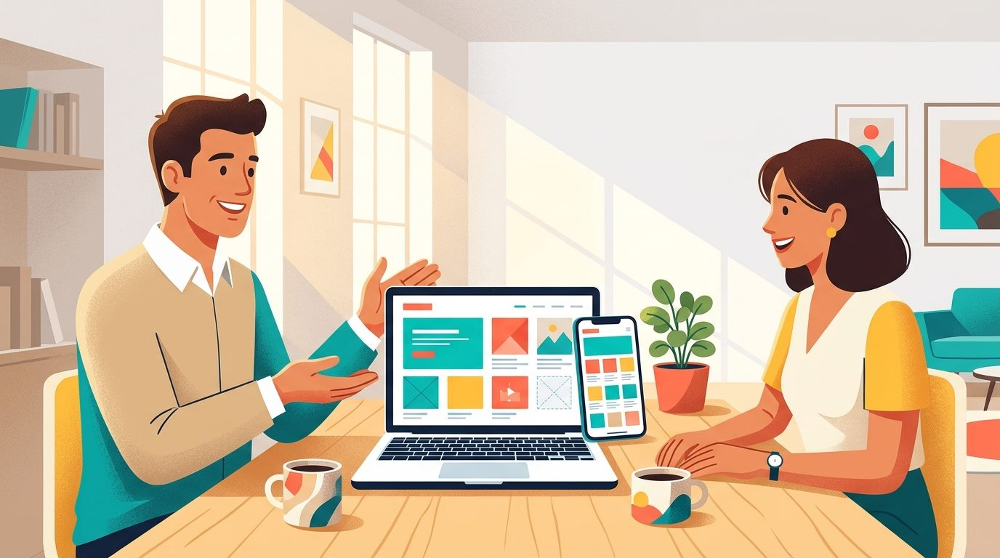
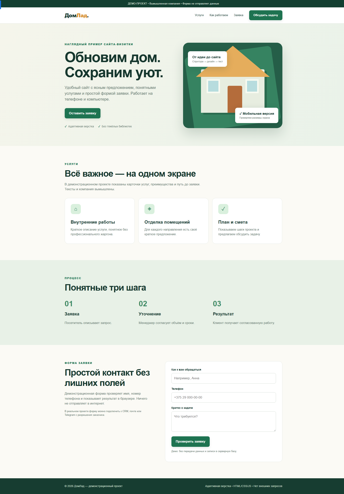
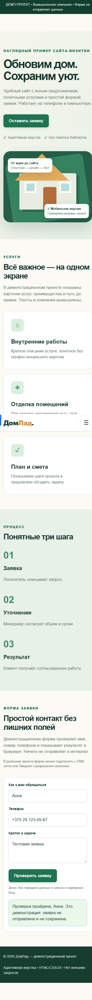

01 · Проблема
С чего всё начинается
Небольшой компании часто нужен понятный, быстрый и аккуратный сайт, который одинаково хорошо открывается на смартфоне и компьютере, без тяжёлых конструкторов и лишней перегруженности.

Небольшой компании часто нужен понятный, быстрый и аккуратный сайт, который одинаково хорошо открывается на смартфоне и компьютере, без тяжёлых конструкторов и лишней перегруженности.
Сверстал адаптивный демонстрационный сайт-визитку на чистом HTML, CSS и JavaScript с удобным мобильным меню и проверкой полей формы заявки прямо в браузере.
Мгновенная загрузка, чистая структура услуг и проверенное отображение на узких экранах (390 px) без съехавших блоков.
Клиент открывает сайт с телефона, за 20 секунд понимает услуги и заполняет заявку — следующим этапом форма легко подключается к Telegram или CRM.
Хранятся отдельно от художественной обложки карточки. Нажмите на изображение, чтобы увеличить.

